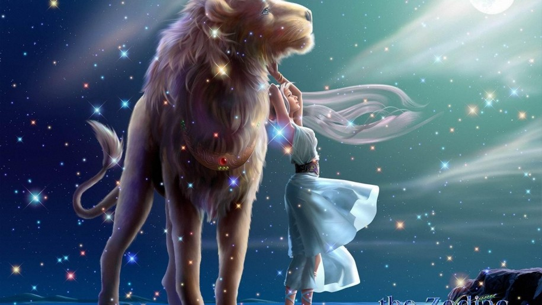
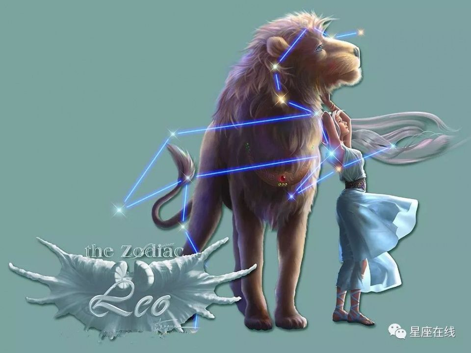
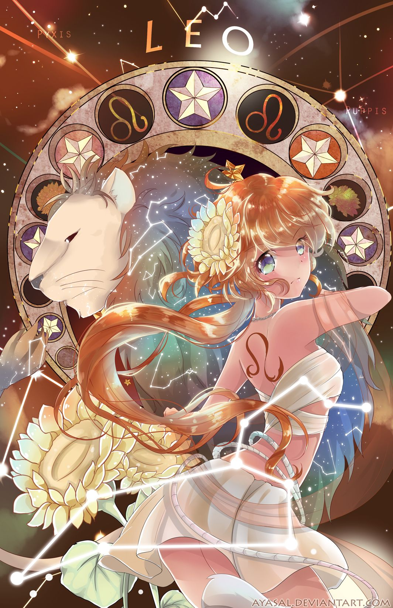

SƯ TỬ
Là biểu tượng của lửa. Sao chiếu mệnh là Mặt Trời, biểu tượng của sức mạnh và lòng kiêu hãnh. Người cung Leo có tính tự lập, tự do cao, có quyền thế, năng động, nồng nhiệt và rất tử tế. Thỉnh thoảng họ quá tin tưởng vào bản thân, họ cần phải nhún nhường và thận trọng. Họ khá lạc quan và một trong những thế mạnh của họ là họ có thể đứng lên sau sự thất bại.
Bởi vì quyết tâm của họ, nên họ thường là những công nhân giỏi và họ có thể làm được những công việc khác nhau một cách dễ dàng: điều quan trọng nhất để trội hơn người khác. Nhưng công việc thích hợp với người cung Leo: diễn viên, nhà ngoại giao, nghệ sĩ tự do, nhà doanh nghiệp. Họ thích sống trong xa xỉ, giàu có, những niềm vui trong cuộc sống và họ ghét sự tầm thường. Họ yêu say đắm và họ có thể làm tất cả cho người mình yêu.
2, Mô tảCó 3 mức độ phát triển trong cung Sư Tử. Mức độ cao nhất được đại diện bởi Nhân Sư (nhân vật mình người đầu sư tử); khôn ngoan, phi phàm.
Thứ hai là loài Sư Tử, chúa tể rừng xanh, sống theo bản năng nhưng luôn bảo vệ, nâng đỡ người mình yêu quý. Thành viên thứ 3 trong “Sư Tử Club” là những con thú con, non nớt, khờ khạo, sợ những thứ mới mẻ. Những chú Sư Tử này hay bám theo người khác (như trẻ con không muốn rời mẹ vậy). Chúng không thể chịu nổi sự cô đơn.
Người được Mặt Trời chiếu mạng là “cái rốn của vũ trụ” – hoặc họ tự xem mình như thế. Sư Tử không thích bị chỉ trích. Điểm yếu của họ là thích nghe lời ngọt ngào, thậm chí nịnh bợ. Khi có nhiều ý kiến khác nhau, nếu ý đó là tốt, họ nhận là của họ, còn nếu xấu thì là của người khác.
Tuy nhiên, họ tốt bụng và hay giúp đỡ. Nếu bạn có chút khó khăn trong công việc, hãy tìm đến người cung Sư Tử bạn sẽ nhận được sự trợ giúp nhiệt tình. Họ yêu quý mọi người và không thích ở một mình. Họ ít khi buồn rầu, ủ rủ. Thật sự, họ giữ thăng bằng tính khí khá tốt.
Trái tim được Sư Tử đặt trên đầu. Một khi đã yêu, họ hoàn toàn chân thành và chung thủy nên rất dể bị tổn thương và tổn thương rất sâu sắc. Nếu bạn làm trái tim họ tan vỡ, hay niềm tin bị phản bội, họ không bao giờ quên hoặc tha thứ. Nếu mối quan hệ giữa 2 người sụp đổ, họ có thể ra đi rất bình thản, không chút nuối tiếc. Sư tử có thể nhẫn tâm cắt đứt quan hệ, để lại sau lưng trái tim tan nát. Với họ, khi tình yêu kết thúc, thật sự cần kết thúc, dù đau đớn, nhưng là giải pháp tốt cho cả hai.
Trước các thử thách, nguy nan, Sư Tử không bao giờ lùi bước, luôn sẵn lòng cứu giúp kẻ khác. Lòng quả cảm là bản chất của Sư Tử. Người sinh ở cung này, làm bạn thì trung thành hiếm có, làm kẻ thù thì rất đáng sợ.
Sư Tử thật sự là một cốt cách tích cực, mạnh mẽ, nhân ái. Người được sao Sư Tử chiếu mạng luôn yêu quý mọi người và là người của đám đông. Đi đâu họ cũng rủ ai đó đi cùng thậm chí là cùng vào WC!
3, Tính cách cơ bảnGiống như con sư tử trong cuộc sống hiện thực, chòm Sư Tử luôn không ngừng tìm kiếm vị trí dưới ánh nắng mặt trời. Dựa vào những biểu hiện mạnh mẽ của mình và những tài năng vượt trội của mình có thể xé nhỏ đối thủ của mình ra, từ đó giành được sự tôn trọng của kẻ khác. Trong nơi sâu thẳm của tâm hồn họ, họ có một niềm tin không thể lung lay, đó chính là làm một ông vua và theo đuổi quyền lực thần thánh của một ông vua (chỉ cần họ là vua thì họ luôn đúng). Họ vô cùng khao khát có được sự sùng bái của mọi người. Họ tin tưởng chắc chắn rằng đối với họ bất cứ lúc nào thành công đều là những việc dễ dàng có được.
Tóm lại, chúng ta phát hiện thấy Sư Tử trong lòng lúc nào cũng có một niềm tin không thể suy chuyển được, đó chính là cuộc sống của họ là chuyện rất dễ dàng, mối một người đều nên đối xử với nhau bình đẳng. Đương nhiên, sự thực lại hoàn toàn không như vậy, hầu như không ai có thể làm được điều này. Đây cũng chính là nguyên nhân tại sao Sư Tử thường gặp phải những sự đả kích nghiêm trọng trong hiện thực cuộc sống, và nảy sinh tâm lý chán nản lùi bước.
Đối với Sư Tử, họ không bao giờ áp dụng các biện pháp thô bỉ, không đúng đắn. Có lúc họ tin tưởng vào người khác như trẻ tin tưởng vào cha mẹ mình, họ quá dễ dàng nghe theo ý kiến của người khác, rất thiếu cảnh giác đối với những cạm bẫy do người khác đặt ra, đặc biệt khi những mưu mô này được bao bọc bởi những lời lẽ đường mật ngọt ngào hoặc những lời tán dương không phù hợp với thực tế, họ rất có khả năng bị lừa gạt. Những lời a dua nịnh hót luôn khiến cho những con sư tử này bị đổ gục.
Ngoài ra, Sư Tử vẫn có một độ ì cố hữu lớn. Theo họ, nếu bạn có thể tìm được người khác làm thay cho bạn công việc này, vậy thì bạn sẽ căn bản không cần phải tốn quá nhiều sức vào công việc đó nữa. Không thể phủ nhận, thái độ này của họ khiến cho họ có được những biểu hiện kiệt xuất trên phương diện quản lý người khác, đồng thời cũng biểu hiện rõ nét của quyền được quản lý người khác.
Nhưng điều này đồng thời cũng có nghĩa là họ không muốn mình phải lưu tâm để ý việc xung quanh mình đang xảy ra những chuyện gì, cũng chính là không thể kịp thời phát hiện ra được ai đó đang âm mưu những việc làm mờ ám để hại mình, lật đổ địa vị của mình.
Điều chẳng có gì ngạc nhiên là do Sư Tử vốn sinh ra đã có đặc tính ham thích vinh quang và được tôn sùng, và có rất nhiều người đã tìm được chỗ đứng vinh quang của mình.
Khát khao được sùng bái tung hô, động tác nhanh nhẹn như linh miêu, hay khoe khoang như trẻ con, thích sự huy hoàng, đặc biệt yêu thích những màu sắc sặc sỡ. Họ thường thiếu tinh thần trách nhiệm.
Nhưng, cũng chính tâm lý cố chấp theo đuổi địa vị, danh vọng của Sư Tử, cộng với những hành động kiểu trẻ con mà họ thường biểu hiện ra khiến cho họ có biểu hiện càng khoa trương hơn, tở vẻ hơn. Cũng giống như con vật tượng trưng, Sư Tử khi theo đuổi mục tiêu của mình dưới sự thúc đẩy của lòng ham muốn cực kì lớn, họ không bao giờ thể hiện tâm lý bán tín bán nghi hoặc lòng dạ hẹp hòi, càng không sử dụng những biện pháp bỉ ổi, coi thường người khác.
Họ khao khát có được sự yêu quý của người khác, hoặc có được sự tôn sùng của người khác trong điều kiện có thể. Nếu trong thời kì niên thiếu họ không có được sự yêu quý mà họ khao khát hoặc bị người khác coi thường, họ sẽ thường xuyên vì vậy mà khép kín trong khoảng không gian riêng của mình, cự tuyệt tiếp xúc với thế giới bên ngoài.
Xuất phát từ những sở thích thiên bẩm sinh thích thể hiện mình, thích xuất đầu lộ diện, Sư Tử không có khái niệm ăn mặc giản dị. Đây là một loại tâm lý hỗn hợp giữa sự tôn nghiêm và ý thích thể hiện bản thân, tủ quần áo của họ và cách trang trí trong môi trường gia đình luôn thể hiện rõ quan điểm “ tôi có lẽ không hiểu nhiều lắm về quần áo thời thượng hoặc nghệ thuật, nhưng tôi biết rất rõ mình thích gì”. Mục đích họ làm như vậy chỉ có một, đó chính là thu hút sự chú ý của người khác, và hi vọng có thể có được sự khâm phục và tán thưởng của người khác.
Nói tóm lại, Sư Tử thuộc kiểu người phóng khoáng, cởi mở và lạc quan, họ có thể thường xuyên tạo ra những kì tích bằng sự nỗ lực của bản thân trong những hoàn cảnh không được thuận lợi, sau đó là chờ đón sự hoan hô và tán thưởng của người khác, họ đón nhận tất cả những vinh dự có thể có được, chứ không bao giờ ý thức được trên con đường dẫn đến thành công của họ, họ có thể gây tội gì với ai không. Cái gọi là “sống trong yên ổn mà nghĩ đến những nguy cơ”, không được biểu hiện ở họ. Khuyết điểm này của Sư Tử rất có khả năng dẫn đến việc làm cho người khác tức giận, thậm chí oán hận.
Nhưng cho dù thế nào, vài thế kỉ trở lại đây, là vua của loài vât, sức thu hút của sư tử, ngoại hình nổi trội của họ và khí chất cao quý của họ đã tạo cho mọi người ấn tượng sâu sắc. Nếu nghiên cứu tỉ mỉ một chút, chúng ta có thể thấy được những ảnh hưởng do sức thu hút này đem lại “giống như sư tử”, dù để hình dung một người nào đó giàu khí chất lãnh đạo, có tài năng chỉ huy toàn cục; “kiểu sư tử” ý chỉ những cử chỉ nổi tiếng; “mạnh bạo như sư tử” lại là chỉ sức mạnh cá nhân lớn, dũng cảm vô song; “sư tử của giới văn học” là hình dung một tác giả có sứ ảnh hưởng lớn, và thích khoa trương những thành tích mình đạt được. “Phần của sư tử” dùng để so sánh những phần lớn nhất, đẹp nhất của một đồ vật nào đó.
Những ngạn ngữ này đã chứng minh một sự thật, đó là sư tử, cho dù là sinh trưởng trong tự nhiên hay chỉ là những người sinh thuộc chòm Sư Tử, thường có thể tạo cho người xung quanh ấn tượg khó phai, khó có thể coi thường.
<